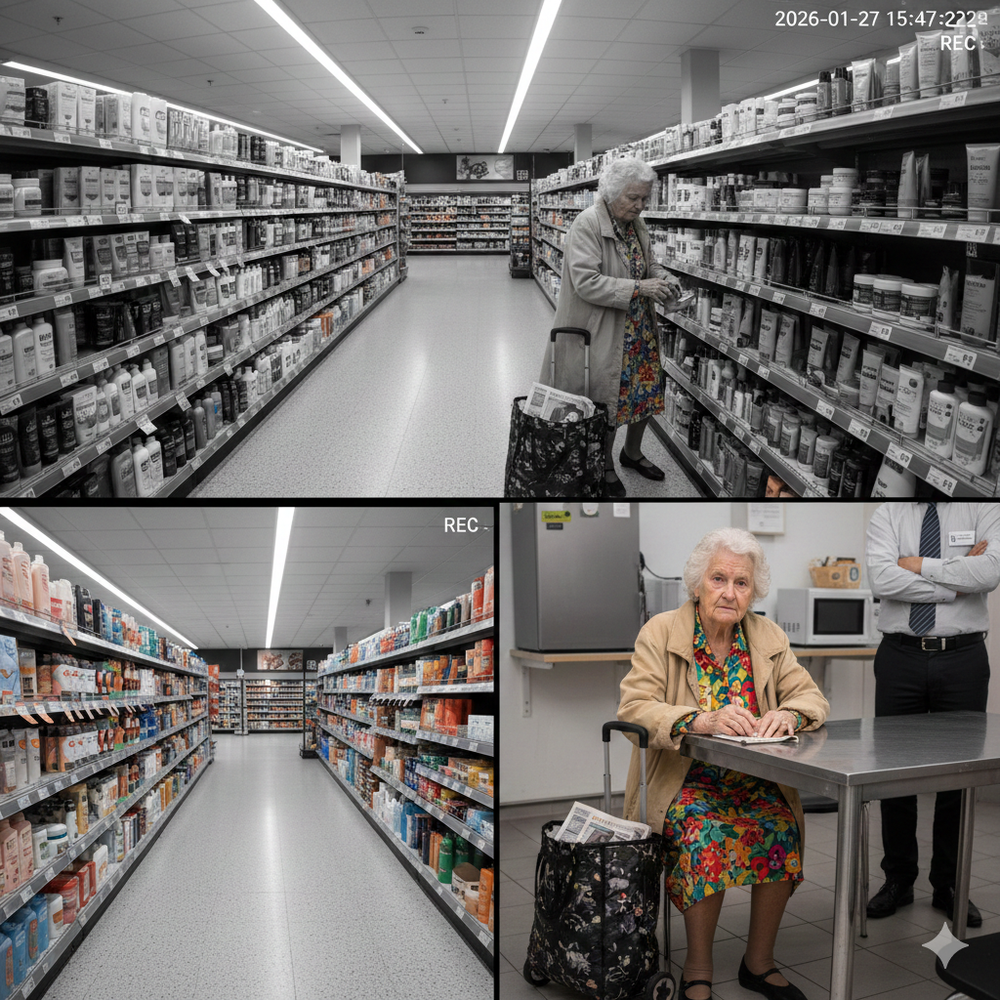

BEWIJSMATERIAAL (STILLS)

* Analyseer het kale decor (supermarkt), het veranderlijke decor (de diefstal) en het signalement op de stills.
1. MAAK HIER AANGIFTE OP
2. INGELEVERDE TEKST & ANALYSE
Ingeleverde tekst verschijnt hier...
0GOUDEN W'S
0WETENSCHAP
0OVT
0VOLT. DW.
0BESTANDDEEL